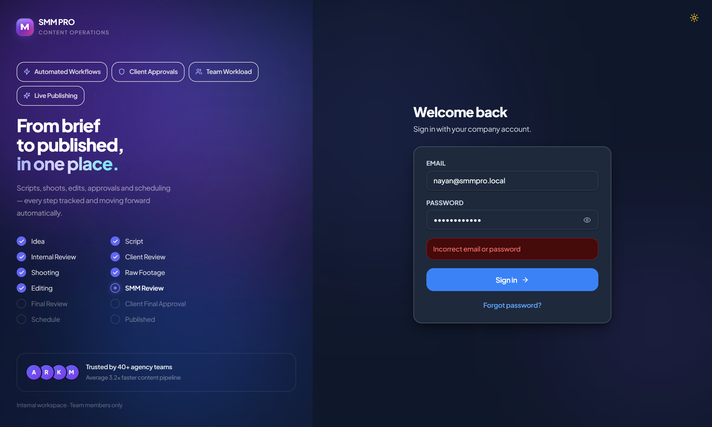
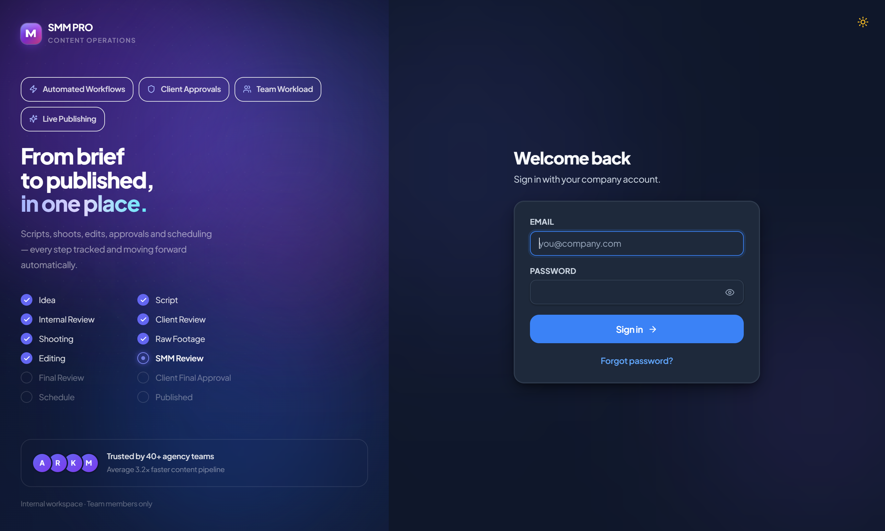
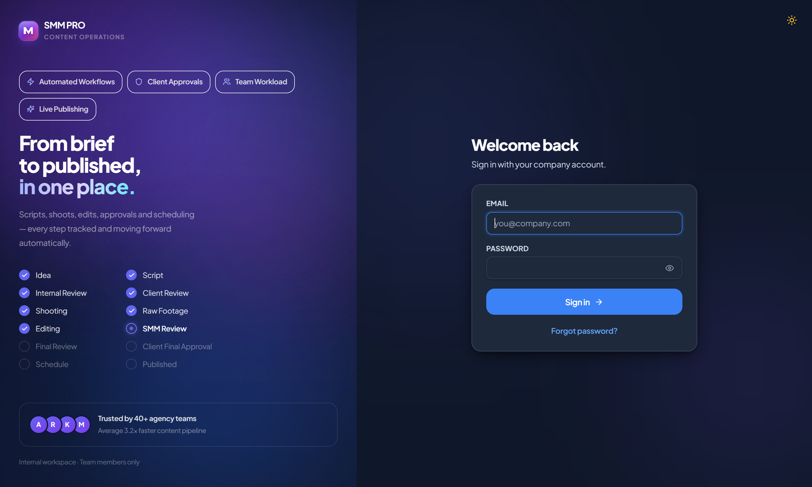

SMM PRO is a private agency platform. Every team member signs in using their assigned company email and secure password.
Navigate to smm-pro-nayankotadiya.vercel.app in your browser (desktop or mobile phone).
Type your company email address and secure password provided by your agency administrator.
If you have enabled 2FA, enter the 6-digit verification code from your Google Authenticator or Microsoft Authenticator app.
Upon sign-in, you are greeted by the Command Center. The dashboard dynamically personalizes metrics based on your role (Managers see company-wide throughput; Writers & Editors see assigned deadlines).

Instantly track active content pieces, scripts under review, pending shooting sessions, and reels awaiting client sign-off.
Your pending tasks appear right at the top. Click any task to jump directly into the script editor or media review room.
See who is actively online, away, or in Do Not Disturb (DND) mode across your production team in real time.
View upcoming social media publishing deadlines, video delivery milestones, and festival campaigns at a glance.
Centralize client assets, brand guidelines, contacts, and communication history in one unified directory.

Click "New client". Enter business name, contact person, WhatsApp phone number, and social media handles.
Configure brand colors, fonts, tone of voice (e.g. "Playful and energetic" or "Luxury and elegant"), and USP. Writers will see these guidelines while drafting scripts.
Assign a dedicated Writer, Shooter, Editor, and SMM for each client. Every new piece of content automatically assigns to this dream team.
Track reels, carousels, and stories from ideation to final approval. SMM PRO prevents accidental overwrites with versioned script drafts (V1, V2, V3).

The writer enters the Opening Hook (0-3s), followed by scene cards with split Dialogue and Visual Directions, ending with a Call-To-Action (CTA).
Click "Submit for Review". The Content Manager or SMM receives an instant notification to review the draft.
If changes are requested, the writer creates Version 2 (V2). Version 1 is permanently archived for history, preventing lost revisions.
Eliminate back-and-forth email chains. SMM PRO generates one-click review links that clients can open on their phone without creating an account.
Click "Share Link" to copy the client portal URL. Send it over WhatsApp, SMS, or Email. The client views the script or streams the video immediately.
Clients and reviewers can pause the video at any exact second (e.g. 0:14) and type specific change requests. The editor sees a marker on the timeline.
When the client clicks "Approve" on a script, the shooter automatically gets a Shoot Task! When raw footage is uploaded, the editor automatically gets an Edit Task!
Large 4K files stream directly to Google Drive via chunked resumable sessions. Editors never experience server upload timeouts.
Super Administrators can customize team roles, manage users, and connect third-party cloud services.
| Tab | Features & Configuration |
|---|---|
| Profile | Update your name, personal email, phone number, and enable Two-Factor Authentication (2FA). |
| Notifications | Choose which notifications you receive via In-App badges, Web Push, and Email. |
| Users | Add new team members, assign job titles, and deactivate accounts when employees leave. |
| Roles | Fine-tune permissions across 10 distinct roles (Scriptwriters, Video Editors, SMMs, Managers). |
| Integrations | Monitor Google Drive Cloud Storage, Email SMTP services, and AiSensy WhatsApp campaigns. |
| Production Stage | Who Does It? | Action in SMM PRO | Next Automatic Trigger |
|---|---|---|---|
| 1. Briefing | Manager / SMM | Create Content item & set deadline | Writer notified with Script Task |
| 2. Scripting | Script Writer | Draft hook, scenes & submit V1 | Manager notified to review script |
| 3. Client Review | SMM / Client | Share review link via WhatsApp | Client approves or requests edits |
| 4. Shoot | Shooter | Upload raw takes to Media tab | Editor notified with Editing Task |
| 5. Edit | Video Editor | Upload V1 edit & thumbnail | SMM notified for internal QC |
| 6. Final Approval | Client | Reviews final video on review link | SMM notified with Scheduling Task |
| 7. Published | SMM | Schedule reel & mark Published | Content moves to 100% Complete! |